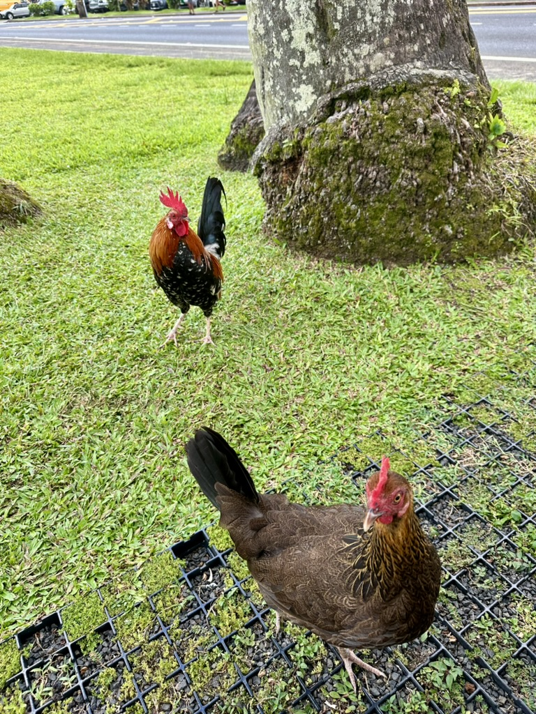
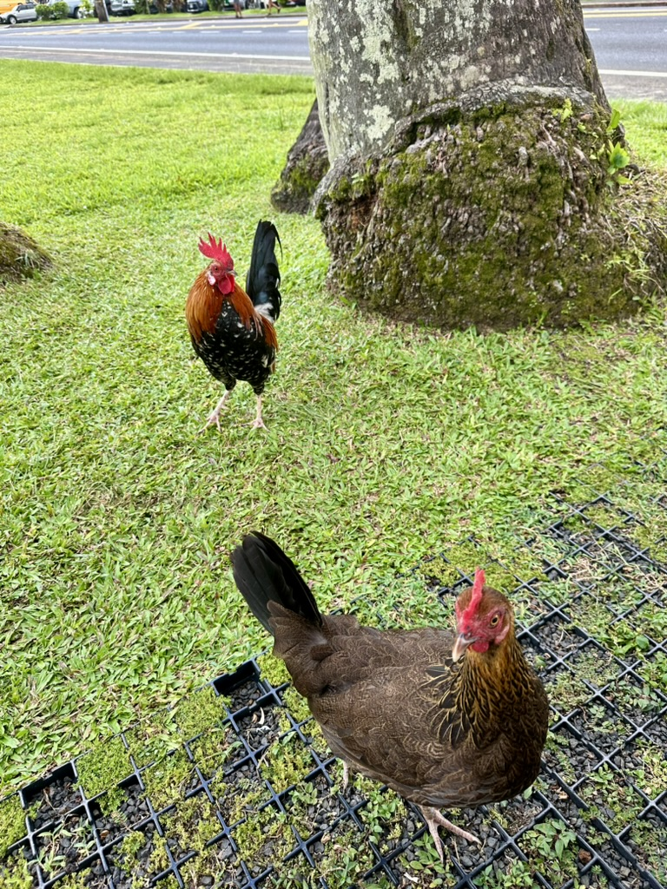
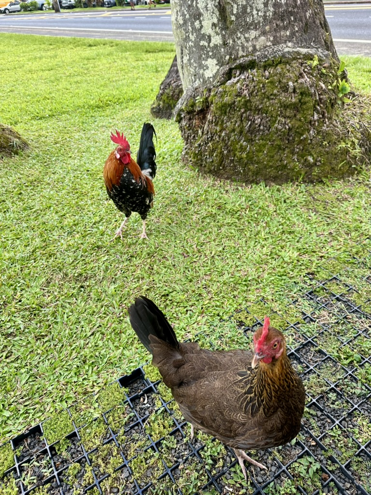
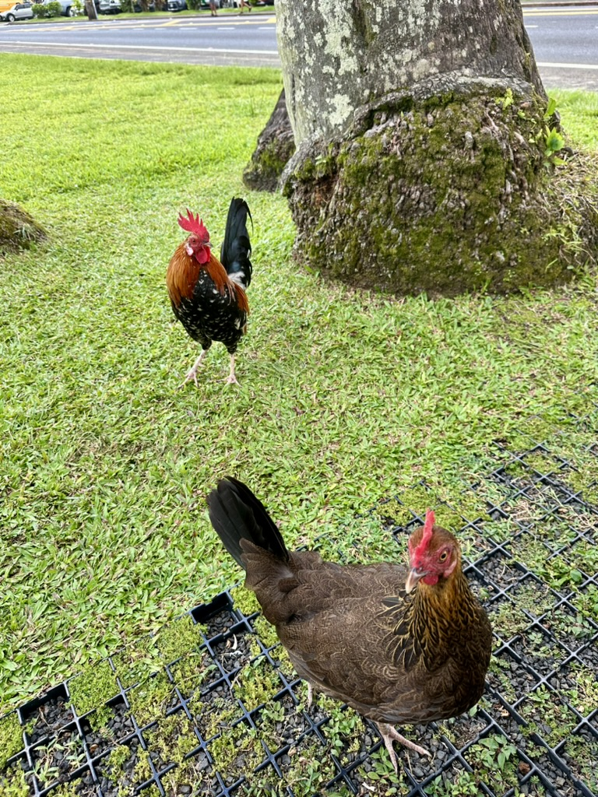

 

I'm starting off the blog with an exciting journey to Kauai, the "Garden Isle" of Hawaii! Renowned for its lush, tropical landscapes, this island is a paradise of vibrant greenery, cascading waterfalls, and pristine beaches. Kauai offers a unique blend of natural beauty and adventure, with its rich wildlife and ever-changing weather adding an element of surprise to every moment. From the dramatic cliffs of the Nā Pali Coast to the tranquil charm of Hanalei Bay, this island promises breathtaking views and unforgettable experiences at every turn. Stay tuned as we dive into the wonders of Kauai!
Kauai’s wildlife is as diverse and captivating as its landscapes. The island is home to a variety of unique species, many of which can’t be found anywhere else in the world. Keep an eye out for the nēnē, Hawaii's state bird, often spotted in open grasslands. The island’s waters are teeming with life, from playful spinner dolphins to majestic humpback whales during their migration season. Tropical forests shelter vibrant birds like the ‘i‘iwi, while sea turtles and monk seals bask along the shoreline. Whether hiking, snorkeling, or simply exploring, Kauai offers countless opportunities to connect with its incredible wildlife.
"The world is a book and those who do not travel read only one page."
— ST. AUGUSTINE